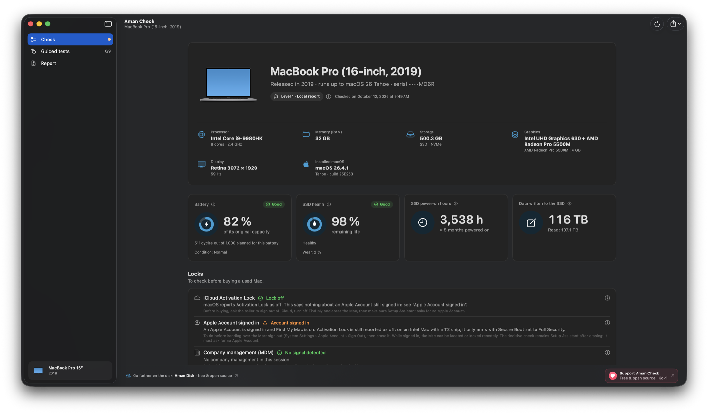
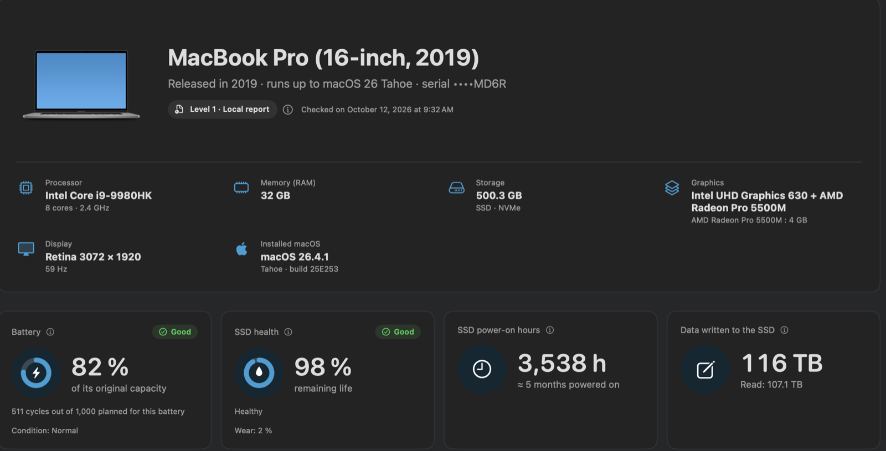
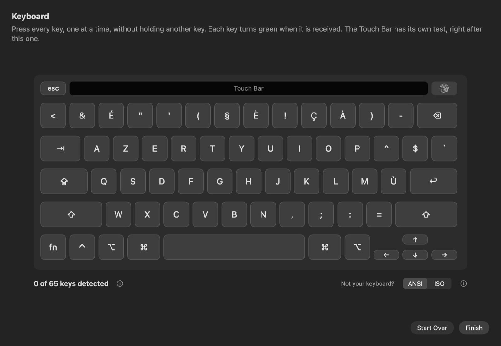
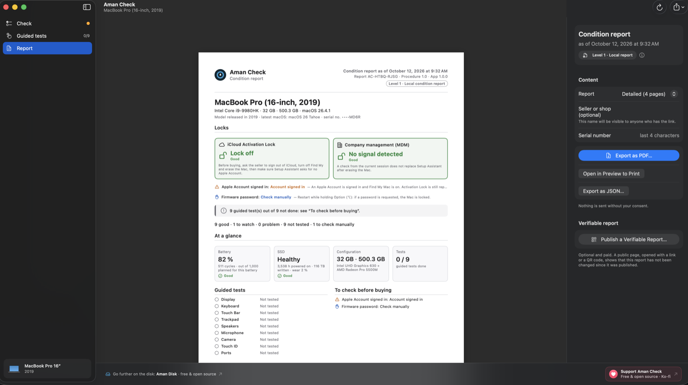
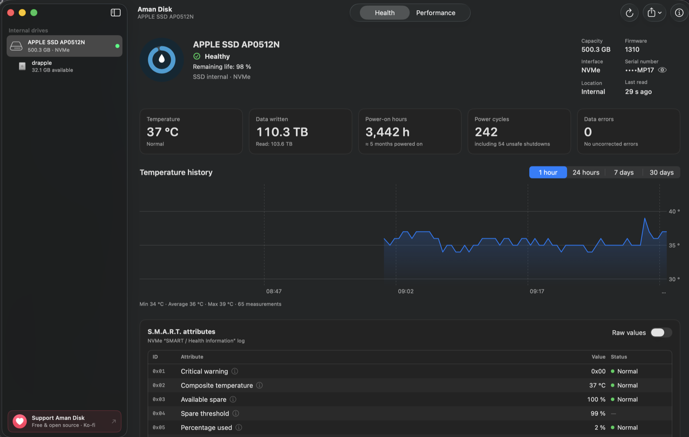
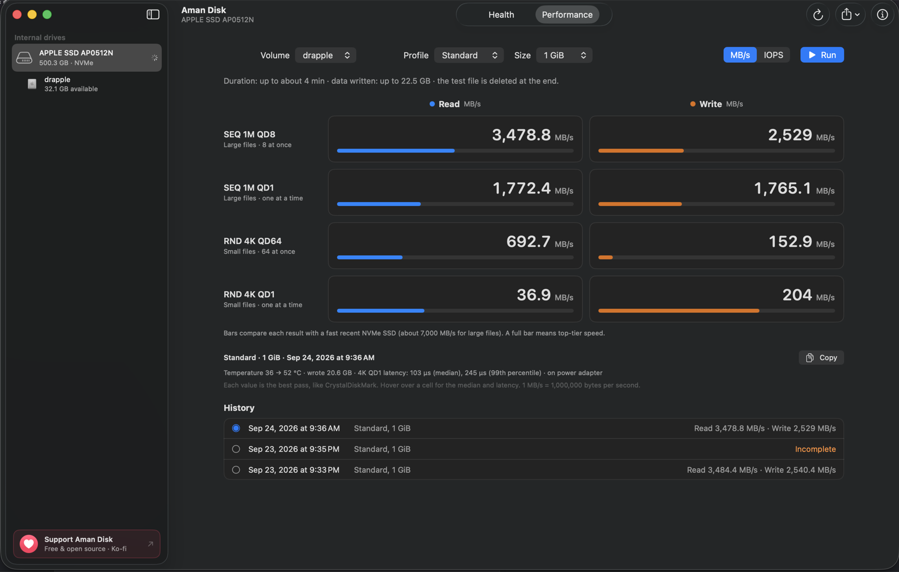

Ten minutes with the Mac. Here's what to do with them.
Aman Check runs on the Mac you're about to buy or sell and writes a dated condition report anyone can read. Free, open source, and nothing leaves the Mac.
macOS 14 or later, Apple Silicon and Intel. The app isn't notarized by Apple, so macOS asks you to allow it once: here's how.
Open the app on the seller's Mac.
Copy it from a USB stick or download it; no account, no password, no installation beyond dragging it to Applications. The analysis starts in a few seconds and reads only: it never changes anything on the Mac.

Read the locks first.
A locked Mac is worth nothing, so blockers always sit at the top, in red. Aman Check reads what macOS reports and tells you what it doesn't prove: an Activation Lock shown as off says nothing about an Apple Account still signed in, so that line gets its own check.
- iCloud Activation LockLock off
and whether an Apple Account is still signed in with Find My on - Company management (MDM)No signal detected
a Mac still enrolled can be locked or wiped remotely - Firmware passwordCheck manually
needs administrator rights to read, so the app tells you how to check it by hand - Virtual machine, SIP, FileVault, configuration profiles
the rest of what a seller could hide behind, each with its own line
Battery and SSD, in numbers the listing never gives.
Charge cycles and today's full-charge capacity against the original one. S.M.A.R.T. health of the SSD, hours powered on, data written, wear and spare capacity, read with the Aman Disk engine. Then the real configuration: model and release year, chip, memory, storage, graphics, display, installed macOS and the latest macOS it will ever run.

Now test what no spec sheet can tell you.
Nine guided tests, one per screen. You do them, the app records what you observed and says so in the report. An external keyboard or mouse is detected first, so it's the built-in hardware that gets tested.
- DisplaySolid colours full screen: dead pixels, stains, uneven backlight
- KeyboardEvery key turns green when it answers
- Touch BarDisplay and touch, end to end
- TrackpadClicks, gestures, Force Touch, the whole surface
- SpeakersLeft, right, crackling
- MicrophoneLevel meter and a short recording played back
- CameraLive picture, nothing saved
- Touch IDFingerprint reader
- PortsA USB stick validates each port; charging, video, headphones, SD card

Export the report. Shake hands on the same document.
A PDF for both of you and a JSON for the record, dated to the minute. The summary is four counts, nothing else: no score, no grade, no stars, because a flattering number is exactly what a buyer pays for later.
Every line says whether it was measured by the app or observed by the person.
A value the app can't read becomes “Not available” or “Check manually”, never a quiet pass.
Same for a refused camera or microphone permission. The report says what wasn't done.
You won't find “certified”, “warranty”, “100% working” or “Grade A” anywhere. It's a snapshot taken on the date shown, and says so on every page.
No network, no telemetry. The serial number shows its last four characters only. The only files written are the PDF and JSON you choose to save.

Go all the way on the disk with Aman Disk.
Aman Check tells you the SSD is healthy. Aman Disk, the sister app whose engine it already uses, shows you why, attribute by attribute, and keeps watching the drive once the Mac is yours. The disk check-up to run on the Mac you've just bought.
- Every S.M.A.R.T. attribute, named and explained, with the raw values on request.
- Temperature history: a reading every 30 seconds, kept for 30 days, with a menu bar panel.
- Performance test: sequential and random reads and writes, test file always removed.
- External drives too: Thunderbolt and USB4 NVMe enclosures, USB SATA drives, alerts and history.
- Same rules: no network, no data sent, never changes your data, 18 languages.


Both apps are free and open source.
MIT licensed, written in Swift, no account and no paid tier for the local report. If they helped you buy or sell with a clear head, a coffee keeps them going.
“Aman” is water in Kabyle, hence the drop in the icon, and safety in Arabic. Both fit an app that watches over a Mac.